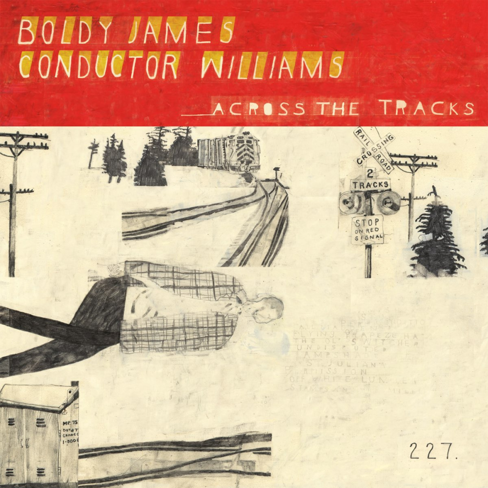
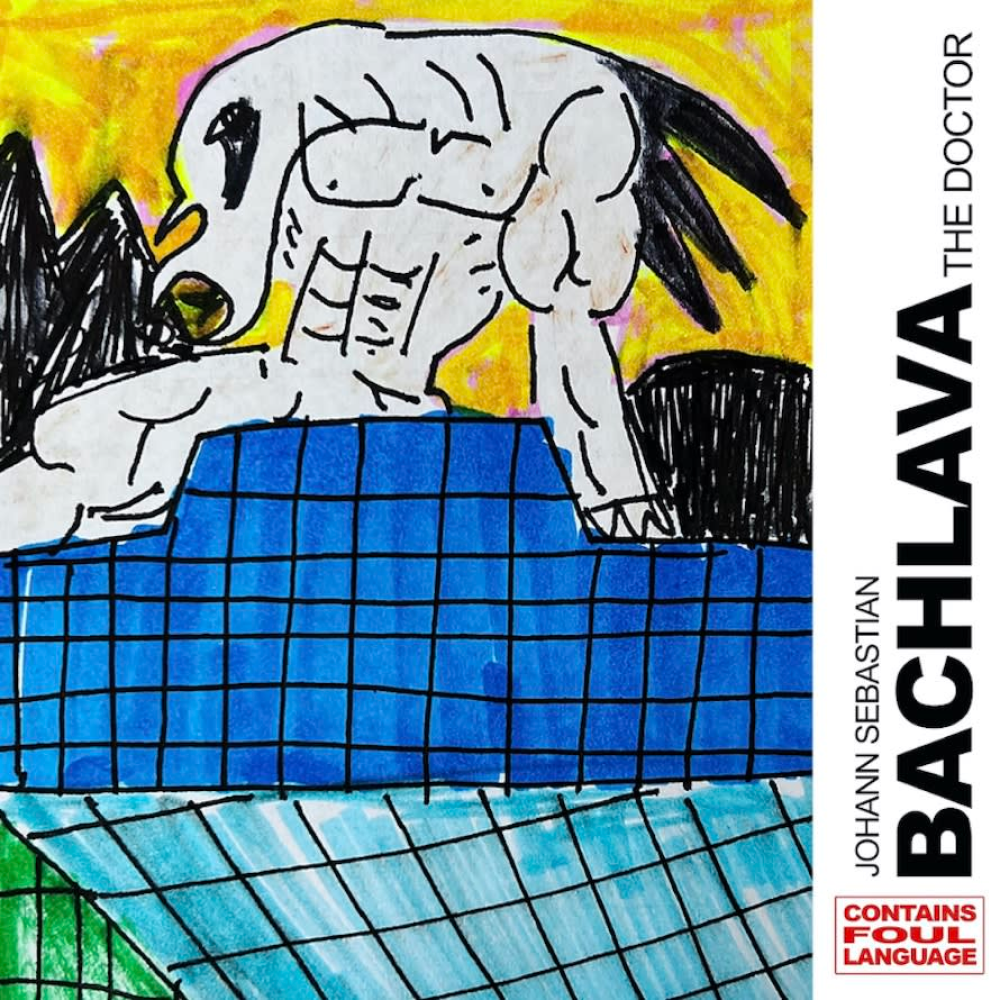
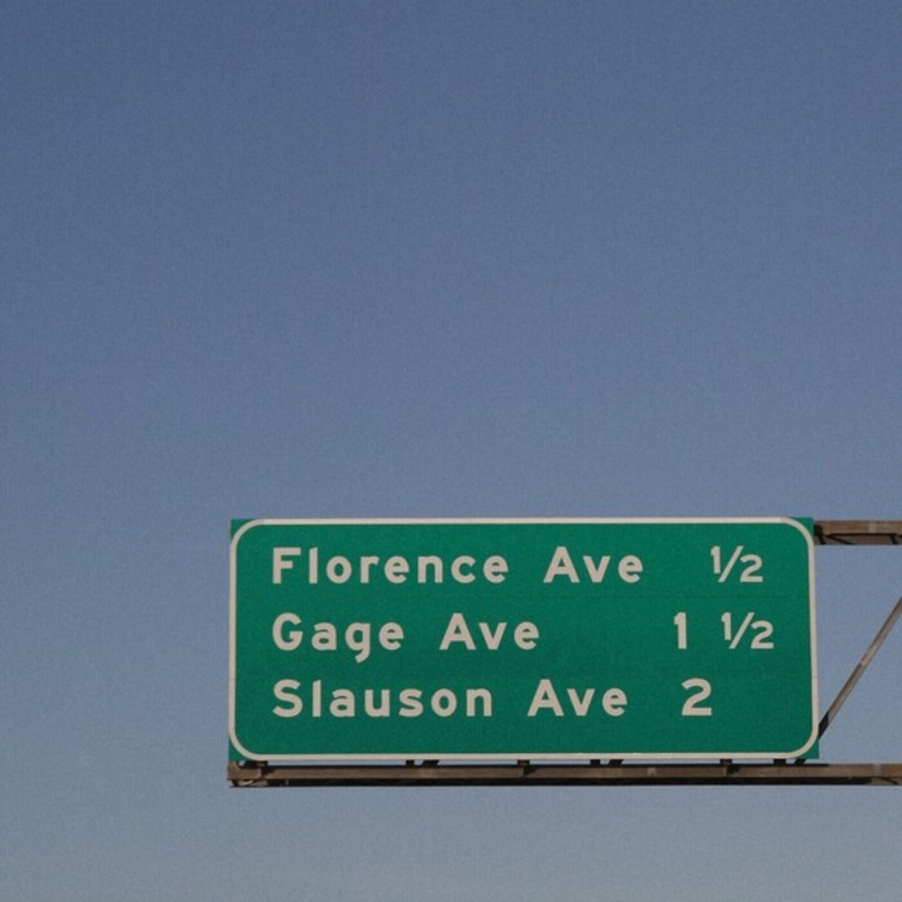
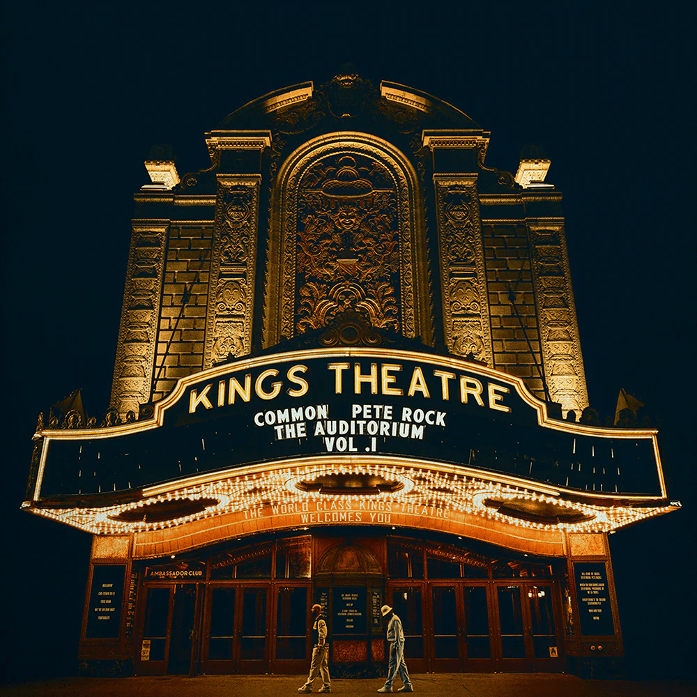
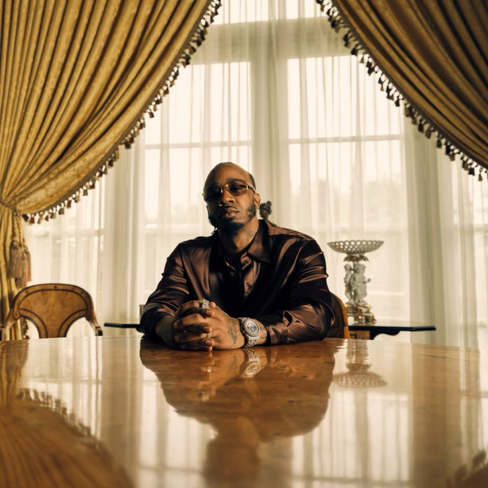
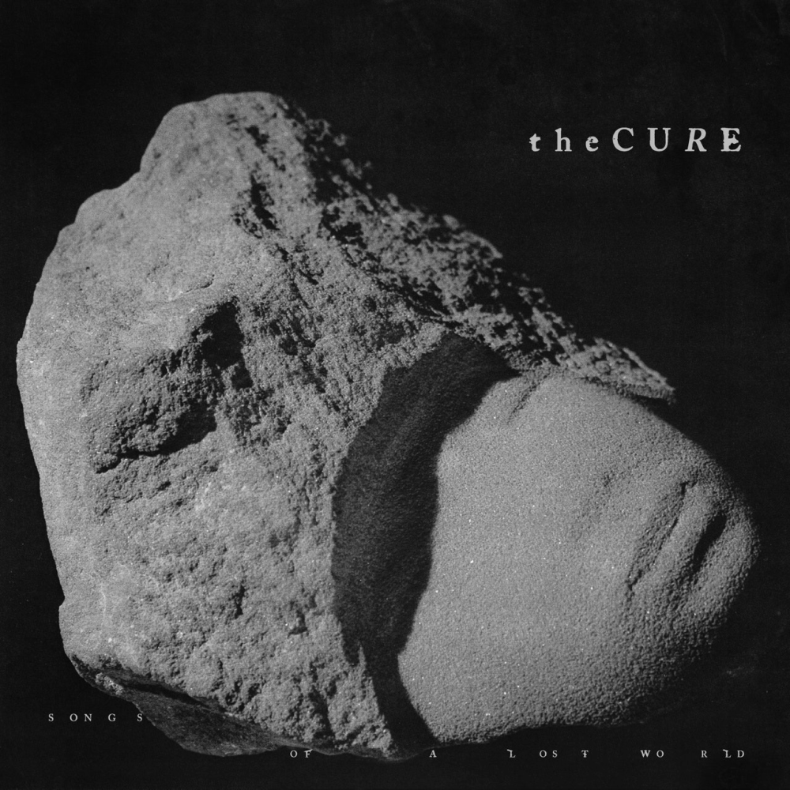
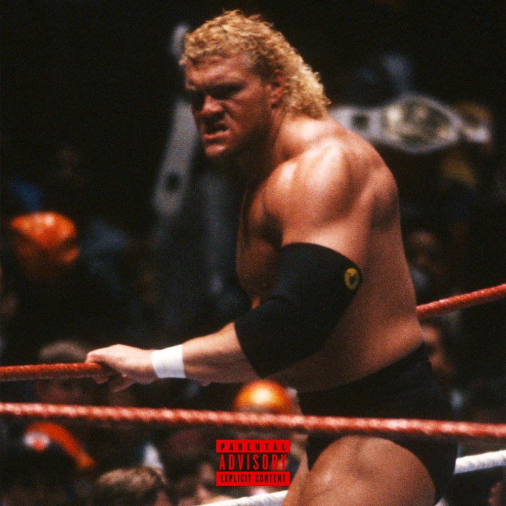
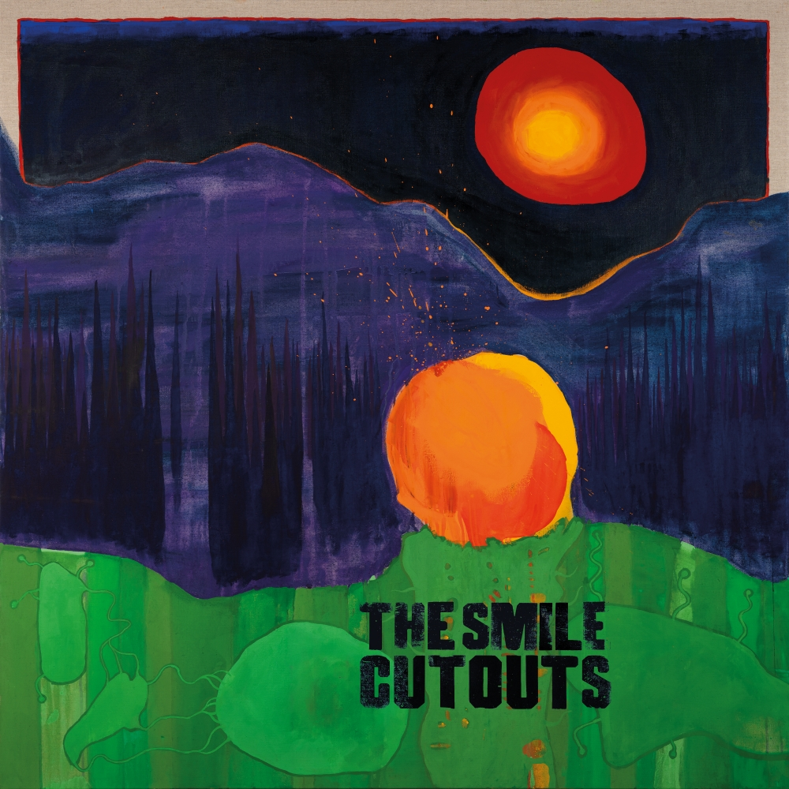
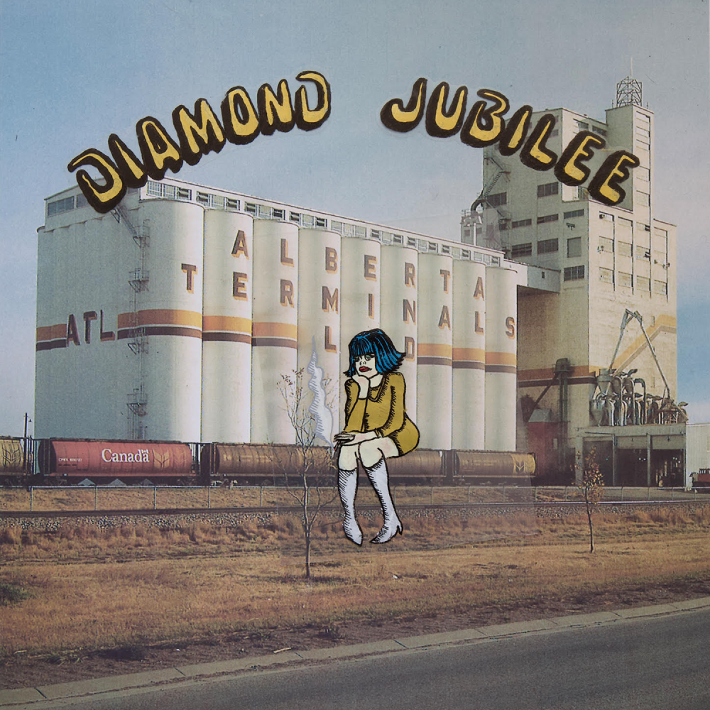

January 03, 2025
This blog/writing section is new for me having something like this on my website and attempting to add and share more medium / longform stuff while having full control. This year I have made a conscious effort to listen to more music and just hit play on more stuff that I maybe wouldn’t have in the past. Also, I have found myself listening to podcasts constantly, and I know that’s rotting my brain somehow. Even though this ended up with me listening to older albums that I had missed in the past, I feel like I did an alright job of getting into some new releases that included some stuff that felt a tad outside my comfort zone. Still, there was a fair amount of hip-hop but that's to be expected, there was a lot of undeniable stuff put out this year.
I was late to this one, but as a fan of both of these men, I had high hopes. Those hopes were exceeded, I've probably played this one back more than any other new album this year. Boldy glides over Conductor's production dare I say better than Alchemist's... Either way, listen to this one three times in a row and see if you agree.
I'll always press play on new Bronson the day it comes out. The beats are crazy (all Daringer and Alchemist), and Action is putting out funnier-than-usual raps that feel like they were done quickly in a very good way. Was hyped on the videos for the first couple singles as well, rappin' in a Jeep Cherokee with a nice fleece on is Bronson in his true form.
I happily support everything Evidence touches, him and Blu doing a full concept record was not what I expected. The results are great and Blu is doing new great things here, especially because I have not always loved every choice he's made. Ev shines here and is the perfect choice for an L.A.-based record, Blu's stories of West Coast streets flow over Ev's drums so well. This whole catalog and crew Evidence has formed around his Bigger Picture Recordings label and has rounded out well with this release.
If you can't tell by now I really like one-rapper / one-producer records... these two together are an all-time link-up. As much as I hate Pete's old man anti-vaxx mentality (avoid his Instagram at all costs) I can't deny that his beats have remained really, really good at an age where most fall off. Common is also one who is damn near at his best thirty years into his career, I remember not paying much attention for a while and then his L.A. Leakers freestyle came out, and was flabbergasted and knew I would tap in for all future projects.
My favorite member of Griselda changes at least twice a year, and this year it's been Benny the whole time (but check for Gunn below). This album has two producers (Alchemist & Hit Boy) which is something I'm beginning to like a lot as well, it gives albums a bit of a Jaylib vibe which is always nice. Benny can tap into the right aspects of a 90s rap record without being lame about it. The way he repeats himself and wraps every line back around to a single word on BRON could have easily been horrible, but it very much is not. I love it when these "newer" rappers get Lil Wayne on songs, his features within the last decade have been my favorite of his career.
Read more about my thoughts on this album over on my Record Club profile.
This one was a surprise to me, obviously was not checking for The Cure anytime lately, I'm not a massive fan but a handful of their songs are some of the best songs of all time. Maybe this wasn't so much of a shock for true Cure fans, but this record blew me away. Mr. Smith and crew handled every aspect of this release perfectly, from the tone of the music to the artwork and the fact that people would probably write them off in 2024. This record captures this year in a bottle and I keep going back for sips.
I thought Westside Gunn retired??? Because of that, this record was a nice surprise for me, then you hear a whole lotta Statik Selektah, and then you find out he was clearly influenced by Tyler and has DJ Drama on the whole thing? This mixture is just very nice for someone like me who's a fan of every ingredient in that stew. Not a lot of features and a whole lot of wrestling references – what else should a Westside Gunn album have?
Tom Yorke & Johnny Greenwood get my attention every time, the first Smile record is probably better than this one if I had to choose, and it was hard to choose between Cutouts and the other Smile record that came out in 2024, I still ended up riding with Cutouts.
Was also late on this one, but when I first saw this album it had the feeling of something that had been out for years. The design of the album cover feels evergreen and perfect and then you hear the music and all comes together that much more. Was never a huge psych/indie guy but this one made me change my mind.
Ok, not even close to a full album but still this little collection contains some of my favorite music of the year. Some class Justin Vernon moves here with some solid synth moves and a great song with just vocals and guitar. He's dialing in the vocal modulation here too, nailing that sound of his in the best way yet.